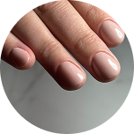
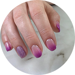
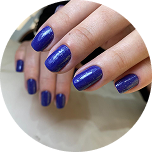
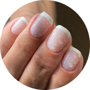
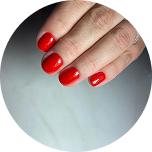

O encontro perfeito entre precisão e beleza
Na Trust, a esmalteria é conduzida pela Adriane, uma profissional apaixonada pela arte de cuidar das mãos com delicadeza, técnica e total atenção à segurança.
Adriane trabalha com a técnica Europeia, conhecida pela precisão, acabamento impecável e respeito à estrutura natural da unha — garantindo resultados bonitos, duráveis e saudáveis.
Aqui, cada atendimento é um momento de pausa e autocuidado, feito com calma, qualidade e muita responsabilidade.
Seu objetivo é simples: que você se sinta bem, relaxe e saia com unhas que reflitam sua personalidade.
Na Trust Esmalteria, cada detalhe das suas unhas é tratado com técnica, cuidado e precisão.
A Adriane possui formação em diversos cursos especializados, garantindo conhecimento atualizado nas melhores práticas de manicure, pedicure, esmaltação em gel, banho de gel, blindagem, técnicas russas e alongamentos estruturados.
O investimento contínuo em capacitação permite oferecer resultados seguros, delicados e de alto padrão — sempre respeitando o formato natural das unhas, sua rotina, gosto pessoal e preferências estéticas.
Aqui, você não recebe apenas um procedimento — você recebe um trabalho feito por quem estuda, evolui e se dedica a entregar unhas bonitas, saudáveis e impecáveis.
Manicure Perfeita
A manicure perfeita reúne técnicas que garantem acabamento impecável, durabilidade e segurança. É a união de precisão, biossegurança e estética para entregar unhas alinhadas, cutículas limpas e esmaltação milimétrica — muito além de apenas “fazer as unhas”, é um processo profissional com atenção a cada detalhe.

Esmaltação em gel
A esmaltação em gel é uma técnica moderna que utiliza esmaltes especiais feitos de gel fotopolimerizável, que secam apenas quando expostos à luz UV/LED.
O resultado é uma unha com brilho intenso, acabamento perfeito e durabilidade muito maior do que o esmalte tradicional.

Banho de gel
O Banho de Gel é um procedimento onde se aplica uma camada de gel sobre a unha natural, sem alongamento, com o objetivo de deixá-la mais resistente, nivelada e com aparência saudável.
Ele funciona como uma “blindagem” que protege a unha contra quebras, descamações e rachaduras.

Blindagem com poligel e realinhamento
A blindagem com poligel aplica uma camada fina e resistente sobre a unha natural para evitar quebras sem perder a aparência natural.
Já o realinhamento corrige curvaturas, ondulações e desnivelamentos, deixando as unhas uniformes, alinhadas e com uma estrutura mais harmônica.

Unha tradicional
A unha tradicional é o serviço clássico de manicure, que inclui cuidados essenciais com as unhas e cutículas, seguido da aplicação de esmalte comum.
É o procedimento mais simples e mais popular, ideal para quem gosta de praticidade, leveza e renovação frequente das unhas.

Na Trust Esmalteria, a excelência também é prioridade. A Adriane investe continuamente em cursos, imersões e treinamentos ministrados por alguns dos melhores educadores do país na área de manicure, alongamento e técnicas de cuidado avançado.
Esse aperfeiçoamento constante permite dominar métodos modernos — como técnicas russas, gel de alta performance, blindagem e alongamentos estruturais — além de acompanhar as tendências mais atuais do mercado de Nail Design.
Aqui, você tem a segurança de ser atendida por uma profissional que se atualiza com os maiores nomes da área, trazendo para a Trust o que há de melhor em cuidado, técnica, acabamento e inovação.